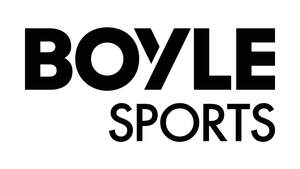

Trade Mark Journal No.2025/022 30 May 2025
UK00004199962 7 May 2025 (9,16,38,41)
Mark 1
Mark 2

- Class 9
- Computer software, computer programs and computer application software; computer software, computer programs and computer application software relating to or featuring games, gaming, gambling, betting, card games, games of skill or casino games; computer software to enable uploading, downloading, streaming, posting, displaying, accessing, tagging, sharing or otherwise providing electronic media or information in the fields of games, gaming, gambling, betting, card games, games of skill, casino games, electronic gaming, entertainment, and general interest via the Internet or other communications networks with third parties; interactive multimedia computer game programs; computer software platforms for social networking; electronic bulletin boards; compact discs, CD-Roms and DVDs; downloadable electronic publications; downloadable electronic betting slips; communications hardware and software; betting terminals; magnetically encoded cards.
- Class 16
- Betting slips; printed matter, publications, newspapers, programmes and magazines; promotional printed material, brochures and pamphlets; stationery and printed forms; scratch cards; advertising signs of paper or cardboard; instructional and teaching materials.
- Class 38
- Telecommunication and communication services; broadcasting services; computer communication and internet access services; provision of access to content, websites and portals; providing user access to the Internet; providing access to multiple user network systems allowing access to gaming and betting information and services over the Internet and other global networks; providing telecommunications connections to the Internet and databases; providing and licensing access to multiple user network systems allowing access to gaming and betting information and services over the Internet and other global networks; providing online forums and online web sites where computer users can create, interact with other computer users and participate in online communities, online games, online competitions, online betting and social networking; telecommunications services on the World Wide Web; electronic communications services; transmission of information over a global computer network such as the Internet including messages, images and information pertaining to gaming; interactive communication by means of computer; communications services provided over the Internet; providing access, connections and links to interactive computer databases and the Internet; telephone services; electronic data exchange including sending and receiving electronic mail.
- Class 41
- Entertainment and sport services; sports and fitness services; publishing, reporting and writing of texts; arranging, organising, provision, management and administration of gaming, gambling, betting, amusement and entertainment services including online or over the internet; gambling, gaming and betting services including those provided online or over the internet; gaming entertainment services provided both online and offline; entertainment services, namely, providing virtual environments in which users can interact through social games for recreational, leisure or entertainment purposes; organisation and conducting competitions; provision of information relating to sporting events; offshore telephone betting services; providing of casino facilities; providing casino services; services for the operation of computerised games and card games; organising competitions; provision of information relating to gaming services accessible via a global computer network; provision of information on-line from a computer database or from the Internet in relation to gaming, amusement and entertainment services.
BoyleSports 2 Unlimited Company
Representative: FRKelly